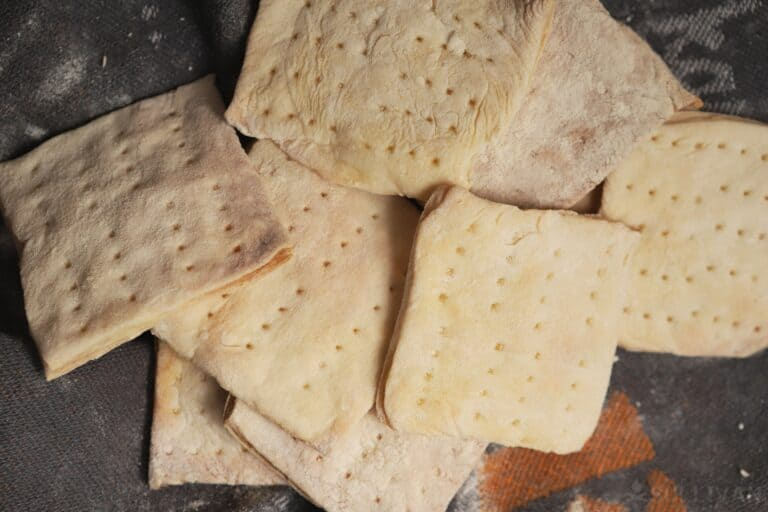

Hardtack

Description
Ancient, simple survival bread. Has long self life. Easy to make. Recommended to soak before eating.
Ingredients
Steps
- Mix 2 cups flour, .75 cups water and 3 tsp salt to create dough.
- Roll dough out to .25 inch or .5 inch thickness.
- Cut into squares and poke holes in the dough.
- Bake at 375 degrees F for 30 minutes, flip and bake for another 20-30 minutes.
- Remove from oven and store in dry area after cooling.